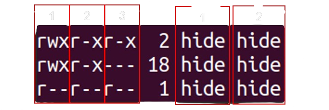

• Reinicia el ordenador para resolver problemas temporales.
• Inicia en modo seguro presionando f8 o shift mientras arranca el ordenador. Allí puedes intentar hacer
reparaciones o desinstalar aquello que puede ser causante del problema.
• Usa la herramienta de reparación de inicio de Windows para resolver problemas.
• Intenta restaurar el sistema a un punto en el que no tuvieras el problema.
• Si nada funciona reinstala Windows mediante un usb.
2. El Windows va muy lento
1. Revisar el Administrador de tareas:
• Verifica los procesos activos y el rendimiento de la memoria RAM y el procesador.
• Si tu computadora tiene varios años, podría ser necesario considerar la actualización o mejora de los
componentes.
2. Gestionar aplicaciones de inicio:
• Abre el Administrador de tareas y dirígete a "Aplicaciones de Arranque". Deshabilita las aplicaciones
que no necesitas que se abran al iniciar el sistema para mejorar el tiempo de arranque.
3. El Windows tarda mucho en iniciarse
1. Hardware obsoleto:
• Considera mejorar hardware como RAM o disco duro por versiones más rápidas y/o modernas.
2. Disco duro lleno:
• Libera espacio en el disco duro eliminando archivos innecesarios o trasladándolos a un dispositivo
externo.
3. Actualizaciones pendientes:
• Asegúrate de tener todas las actualizaciones de Windows instaladas. Ve a Configuración, Windows
Update.
4. Controladores desactualizados:
• Actualiza los controladores del sistema, especialmente los de la tarjeta gráfica, red y disco duro.
Puedes hacerlo desde el Administrador de dispositivos.
4. Tengo el disco duro casi lleno. ¿Cómo puedo liberar espacio en el disco duro?
• Para ver que aplicaciones o archivos están ocupando cierto espacio, dirígete a
Configuración, Sistema, Almacenamiento: Aquí podrás ver que es lo que está afectando a tu espacio, solo
tienes que elegir qué archivos o aplicaciones borrar.
5. ¿Cómo puedo cambiar la aplicación por defecto que abre los archivos PDF?
6. ¿Cómo puedo eliminar las notificaciones de Windows?
• Dirigete a Configuración, Sistema, Notificaciones. Desactiva las notificaciones.
7. No veo las extensiones de los ficheros en Windows
• En el explorador de archivos, arriba en el apartado de opciones dirígete a Ver,
Mostrar y selecciona "Extensiones de nombre de archivo".
8. El escritorio del Windows desaparece y veo una pantalla de color azul indicándome
un error crítico
1. Controladores Gráficos o Software Incompatible:
• Actualiza/reinstala controladores de la tarjeta gráfica.
• Busca conflictos con programas incompatibles y realiza escaneo antivirus.
2. Errores del Sistema o Pantalla Azul de la Muerte:
• Examina mensajes de error en la pantalla azul y búscalo en internet.
• Intenta restaurar el sistema a un punto anterior o ejecutar una reparación de archivos del sistema.
3. Consulta con un profesional:
• Si los problemas persisten, busca ayuda con un profesional o contacta con el servicio técnico.
Linux - FAQ
1. El sistema Linux no se inicia
• Intenta iniciar en modo de recuperación presionando f8, f12, esc o shift mientras el ordenador arranca
para acceder a opciones avanzadas de solución de problemas.
• Revisa si hay mensajes de error para tener pistas sobre la causa del problema.
• Accede a la BIOS y habilita la opción Secure Boot.
2. ¿Cómo se actualiza el sistema Linux?
• Si tu sistema es Ubuntu o Debian:
- Ejecuta en la terminal sudo apt update y luego sudo apt upgrade
• Si tu sistema es Red Hat/Fedora:
- Ejecuta en la terminal sudo dnf update
3. El sistema Linux tarda mucho en iniciarse
1. Aplicaciones en curso:
• Identifica las aplicaciones que estén activas con el comando htop
• Considera hacer una limpieza de aquellas que sean innecesarias o no utilizes.
2. Servicios innecesarios:
• Ejecuta el comando sudo service –status-all para listar servicios. Decide cuáles puedes
desactivar.
• Para desactivar ejecuta comandos como systemctl disable (nombre del servicio).
3. Mejora de hardware:
• Considera mejorar tu disco duro a un ssd y/o amplia o mejora la memoria ram.
4. Actualizaciones y mantenimiento:
• Mantén tu sistema actualizado.
• Realiza limpiezas regulares de archivos temporales.
4. No me puedo conectar a internet en Linux
• Verifica que tu hardware esté correctamente conectado.
• Revisa la configuración de red utilizando comandos como “ip a”.
• Si usas Wi-Fi, asegúrate de que el adaptador esté activado y configurado correctamente con el comando
“iwconfig”.
• Además, verifica si la configuración de DNS es correcta en el archivo “/etc/resolv.conf”.
• Si todo esto está en orden, intenta reiniciar el servicio de red con sudo “systemctl restart
network-manager”
5. ¿Cómo se instala un programa en Linux?
• Para Ubuntu y otras distribuciones basadas en Debian:
- Usa el comando ‘apt-get’ o ‘apt’.
• Para Fedora y otras distribuciones basadas en Red Hat:
- Usa el comando ‘dnf’ o ‘yum’.
• Para distribuciones basadas en Arch Linux:
- Usa el comando ‘pacman’.
• Para instalar un programa llamado ‘nombre-programa’ ejecuta ‘sudo apt-get install
nombre-programa’ en el caso de Ubuntu.
6. No puedo modificar un archivo de texto en Linux
"Con el comando "ll" podemos ver qué permisos tienen los archivos de la carpeta donde estamos, como
también su propietario y grupo, entre otros"
Aquí podrás observar que tu documento no debe tener permisos de escritura (w), sino que debe tener sólo
lectura (r).
Para resolver la avería tenemos que otorgar permisos a este archivo, como antes, vimos 3 campos:
 “r = read (lectura) // w = write (escritura) // x = execute (ejecución)”
"1 = Propietario // 2 = Grupo // 3 = Otros Usuarios"
Para otorgar permisos de escritura ejecuta este comando "chmod ug+w (nombredeldocumento)"
7. ¿Cómo puedo añadir un nuevo disco duro en mi sistema?
1. Ejecuta en la terminal el comando "lsblk" para listar todos los dispositivos de
almacenamiento. Verifica y apunta el nombre de tu nuevo disco duro.
2. Ejecuta el comando "sudo fdisk /dev/(nombre del disco duro)" para entrar en el menú de
creación de particiones.
3. Formatea la nueva partición con el comando “sudo mkfs -t ext4 /dev/(nombre del nuevo disco
duro)”
4. Crea un directorio en /dev/(nombredeldiscoduro)/(nuevo directorio), y monta la nueva partición
con “sudo mount (ruta absoluta anterior)”
5. Agrega la nueva entrada al archivo /etc/fstab para que se monte automáticamente al
iniciar.
6. Verifica el nuevo disco con “df -h” para confirmar que se ha montado correctamente.
8. ¿Qué distribución de Linux me debería instalar?